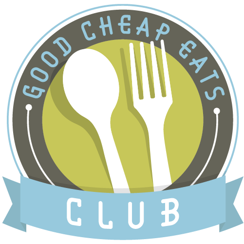

About the Project
My goal is to provide low-income families with the resources and education needed to access and prepare healthy meals; Lowering the consumption of processed and fast foods, despite financial and time constraints.
My goal is to provide low-income families with the resources and education needed to access and prepare healthy meals; Lowering the consumption of processed and fast foods, despite financial and time constraints.
Find resources to help families access healthy foods and nutrition education. Click the images below to explore:
Local Harvest connects families with fresh, locally grown produce to improve access to healthy food.
Eat Fresh provides affordable ways to access healthy produce and educates families on how to cook nutritious meals.
Food Rescue helps reduce food waste and provides healthy meals to families in need.
Wholesome Wave connects families with affordable, nutritious food to enhance the health of underserved communities.
Quick and easy meal ideas that are affordable and nutritious for busy families.
Budget Bytes offers affordable, healthy, and easy-to-make recipes perfect for families on a budget.

Eating on a Dime provides practical and cost-effective meal ideas for families trying to eat healthy without breaking the bank.
Good Cheap Eats focuses on delicious, low-cost meals that are simple to prepare and healthy for your family.